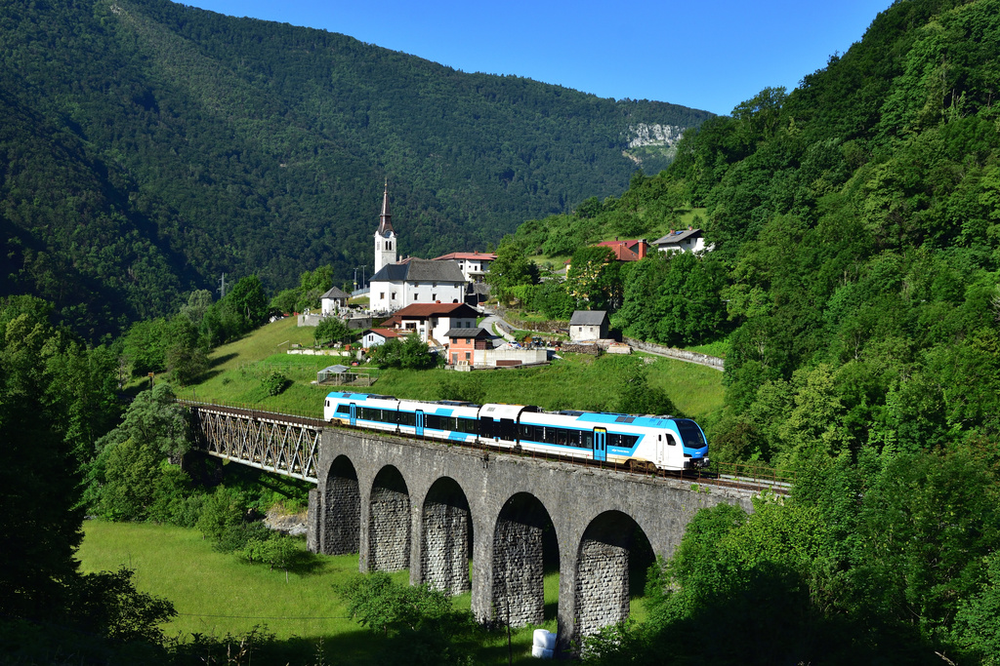
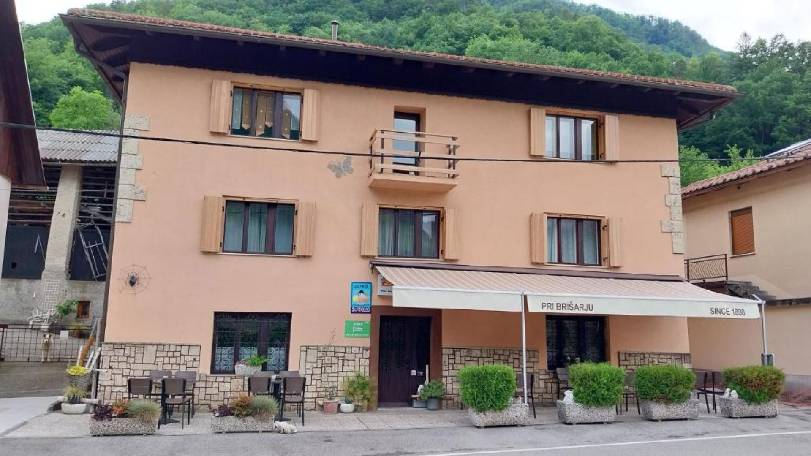
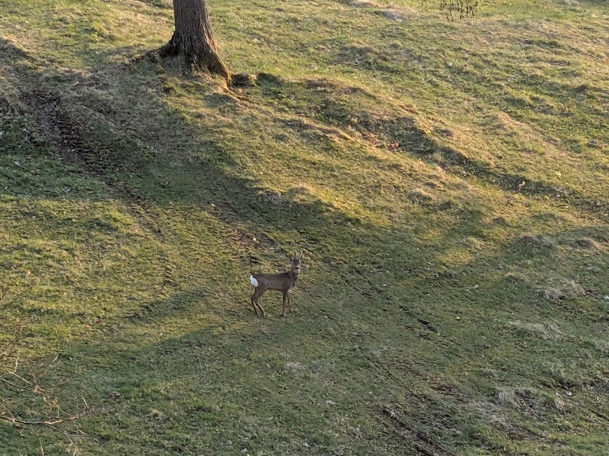
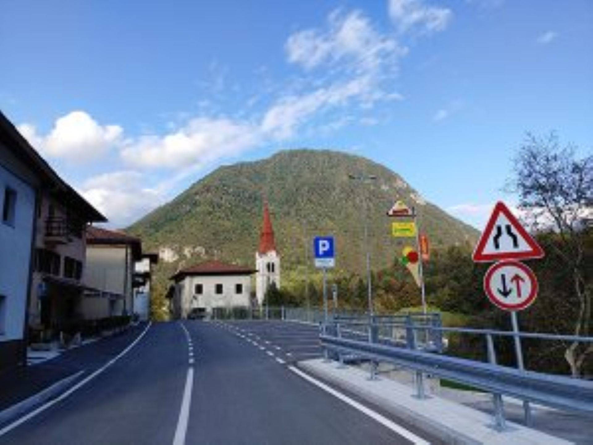
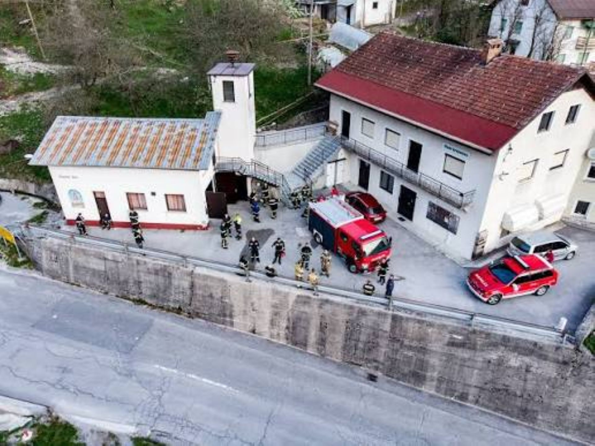
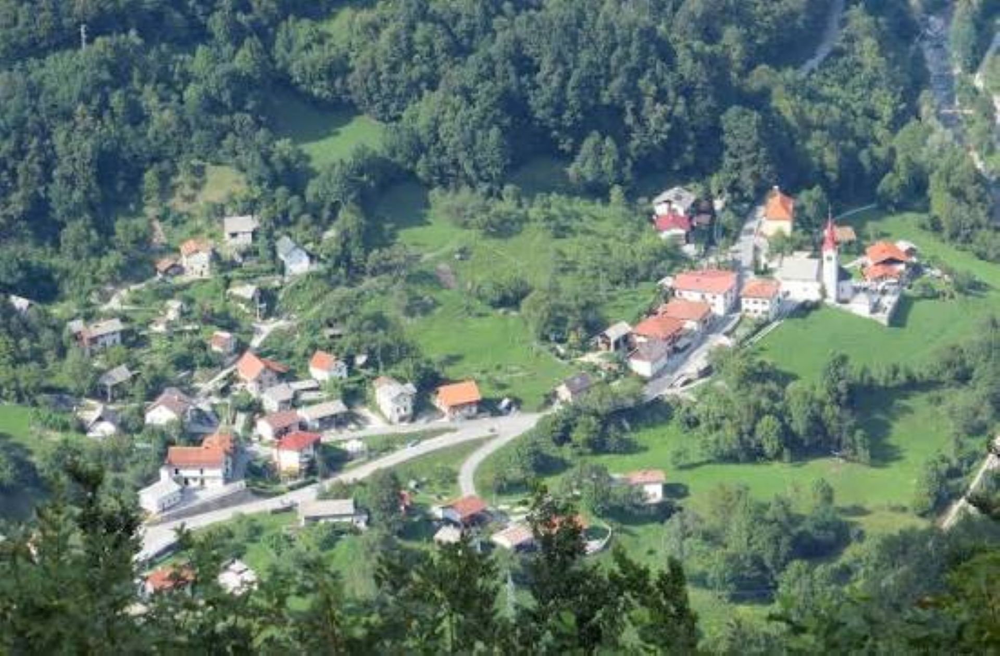
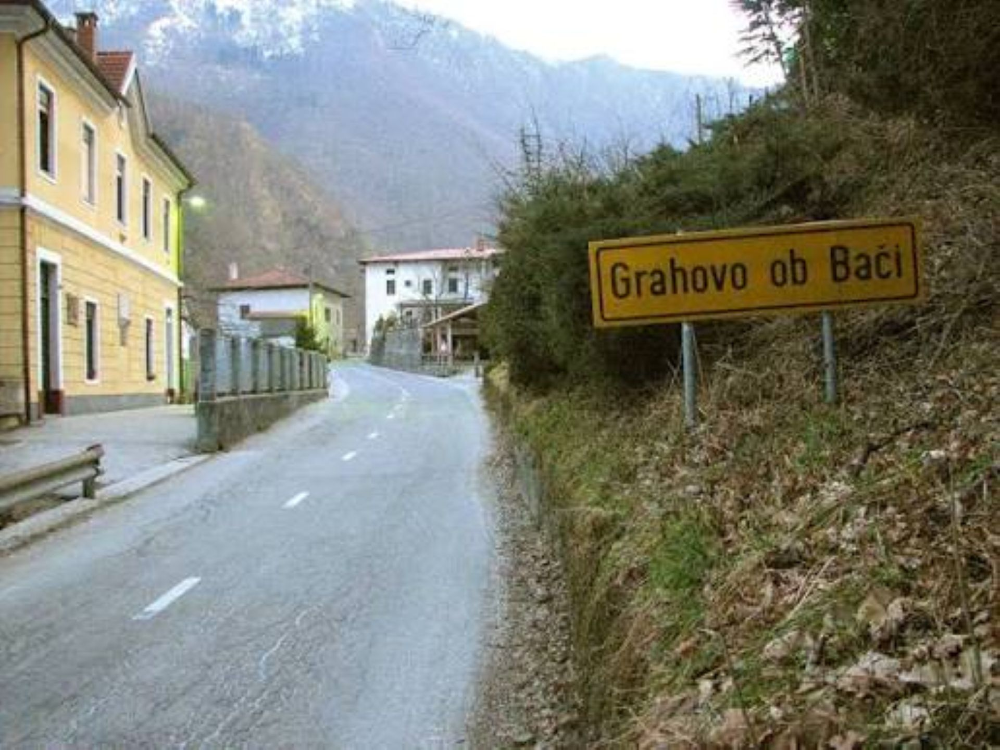
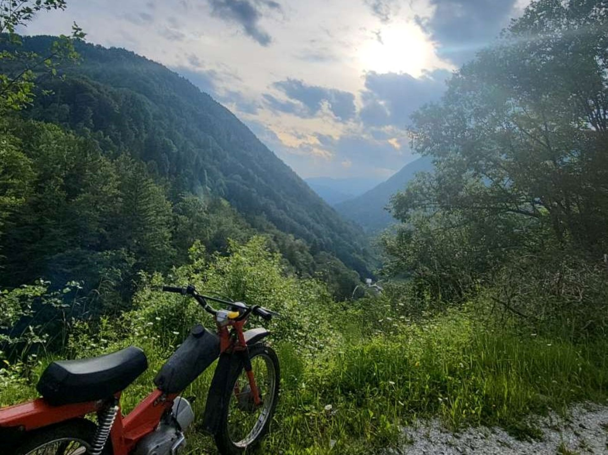
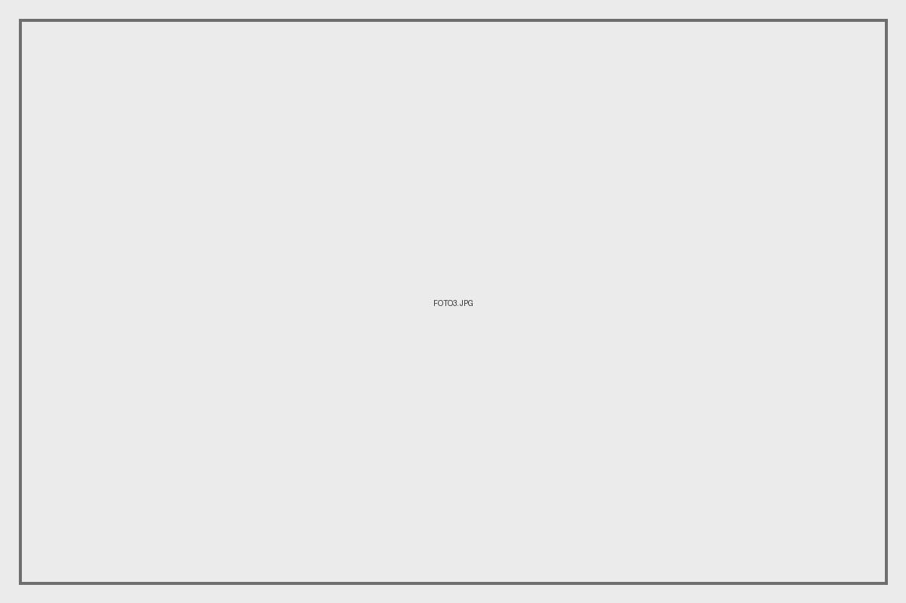

Znamenitost
Tukaj je bil sneman prvi slovenski celovečerec

Grahovo ob Bači je slikovita vas v zgornji Baški grapi, ki leži ob reki Bači v občini Tolmin. Kraj z dolgo zgodovino se ponaša z značilno primorsko-alpsko arhitekturo ter stisnjenimi hišami pod strmimi pobočji. Širše je najbolj znan kot lokacija, kjer so leta 1948 posneli prvi slovenski celovečerni zvočni film Na svoji zemlji. Preteklost kraja zaznamujejo tudi tragični dogodki iz druge svetovne vojne, predvsem spopad med partizani in domobranci decembra 1943. Danes je Grahovo ob Bači mirno naselje, ki s svojo neokrnjeno naravo in bogato kulturno dediščino privablja ljubitelje pohodništva in zgodovine.
Fotografije predstavljajo značilnosti, znamenitosti, naravo in življenje mojega kraja.
Tukaj je bil sneman prvi slovenski celovečerec

Arhitektura v tem kraju je dokaj obična in nekako staromodna.

Tukaj je veliko narave in živali zato je lepo in mirno.


Imamo tudi gasilski dom.

Tukaj je življenje nadvse živahno.

Grahovo ob Bači je gručasto naselje v občini Tolmin, ugnezdeno na strmih pobočjih nad reko Bačo v osrčju Baške grape.

ni se ti treba veliko povspeti da imaš lep razgled.
Izberi eno svojo fotografijo, ki ti je najbolj všeč, in razloži, zakaj.
Opišeš lahko motiv, svetlobo, kompozicijo, perspektivo ali zgodbo, ki jo fotografija predstavlja.

Poišči primeren YouTube videoposnetek, ki predstavlja tvoj kraj ali njegovo okolico.
Vir videa: YouTube – Rok Goes Around
Vse fotografije na spletni strani so lastno delo avtorja, razen če je navedeno drugače.